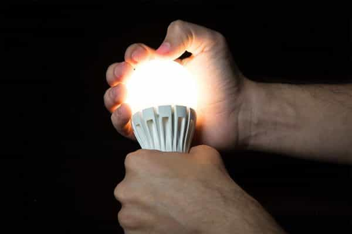
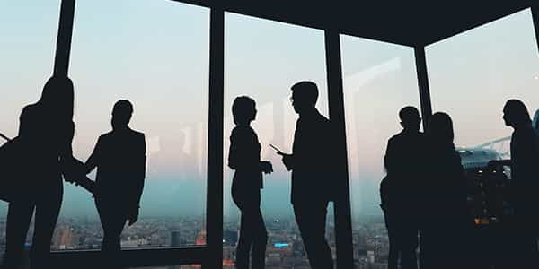
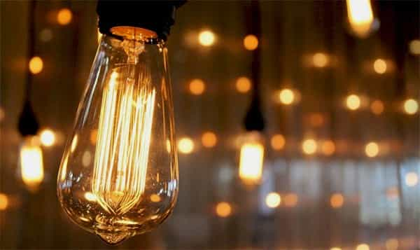

André is a young European who left his decaying country in 2012 for greener pastures. He enjoys exploring subterranean places, reading about a host of interconnected topics, and yearns for Tradition.


Our daily lives are full of things we take for granted and do not give much attention to. Do you think much about the lamps, or better yet, the light bulbs in your home? Usually one pays attention to such a thing only when it stops working and needs to be fixed. You think about bulbs when your ceiling light burned out, otherwise it is just fine. The same goes for many other seemingly or actually trivial things.
But if the devil hides in the details, as the saying goes, it hides in the apparent trivialities too. Artificial lights, although they have been everywhere for more than a century, have much changed in the course of last three decades—and they are far from trivially important. You may be aware that staring at bright screens at night is bad for your health, that it disrupts the natural day/light cycle, and that using a warm filter lets your eyes far better. LED bulbs are still another case: they seem less obvious because we usually don’t stare at them.
Perhaps, metaphorically, we should.

In 2009 I started going, first timidly and cautiously, then on a regular basis in the unofficial Catacombs of Paris. The place has no light of its own, which means that visitors must bring their own, as speleologists do. Thus I bought the classic battery-powered headlamp any large sport shop sells. It had three small LED light bulbs behind its protective glass. Later I bought another headlamp that had only one, yet more powerful, LED bulb. All headlamps you can find on the shelves use these same bulbs.
For a special use like wide-subterranean exploration, this makes sense. When you know you will remain for hours in a place with no lights and know unexpected things like a closed exit may happen, the battery duration is the first consideration, and LEDs are undisputedly the least energy-intensive lamps.
Yet, even then, when sitting in a room one notices quickly that a LED light is unsatisfying. Its glow looks cold—its crude white-bluish sorely lacks warmth. This is why cataphiles bring candles with them.
Better yet: an acetylene (carbide-powered) lamp
As long as one remains able to choose and as LEDs are a freely available mean for a specialized use, I see no problem with them. Catacomb tours are a small-time exposure, and when LEDs are used in order to save battery, they are pretty good. But obviously the world we live in is not like that.
Years later I went to Brazil and noticed many artificial lights displaying the same crude, eye-hurting cold color around. In the streets, in bars, even in houses—Brazilians are used to these sorts of lights. A paradox in a country fairly renowned for its hot girls and where there is much more human warmth than in ruthless “developed” metropolis. Add to the assortment of LED and neon lights late-night TV and you get a splashing visual barbarism. Needless to say, I stuffed my own place with incandescent, either traditional or halogen, bulbs that shine with warm glows.
At least Brazil shows things as they are. LEDs are a cold light, not only to the naked eye but physically as well. Whereas natural sources of light, such as the Sun or fires, and artificial ones such as incandescent bulbs emit red and infrared lights, LED lamps emit no infrared, some red on the higher part of the spectrum, and lots of intense blue.
Cold light is the essential, defining character of LEDs. In contrast with other lamps, they are not a thermic source as they emit no heat. They are high on the blue spectre, low on the red and infrared. To alleviate the visual inconvenience, companies have invented LED lamps that show a predominant yellow taint.
These are very much in use in lounge bars, on the streets, and even around art painting and monuments, which makes them associated with a “classy” ambient. However, these apparently eye-friendly LEDs are physically dissimilar with traditional sources of lights: they use a fluorescent sheet to “dilute” the aggressive blue light into a whitish taint and exaggerate the yellow and red as to dissimulate the colder colours—which are still fully emitted.
Seemingly warm LEDs “lie” on what they are. On the surface, they are normal, flexible, and classy lights; on the physical spectrum, which ought not to be confused with the visible one, they are poor in infrared, poor in low-spectrum red, and excessively blue. These unseen light emissions are not only “colder” in general but deleterious to the eye as well.
Two studies have shown that rats exposed to lights of equal, median intensity for 24 hours were only harmed by LEDs. The excess of blue light hurts the visual cells while the lack of red and infrared prevent cell regeneration—and may let us with less energy left as the body also absorbs energy from light sources.
Lights here appear yellow and provide a typical sober, “classy” effect. Compare with incandescent bulbs and you will notice their coldness, too
As a phototherapy specialist warns:
If you use LED lights after sunset, you reduce the regenerative and restoring capacities of your eyes. Needless to say, with less regeneration you end up with degeneration. In this case, the degeneration can lead to AMD, which is the primary cause of blindness among the elderly. However, and this is that most fail to appreciate, LED light exposure that is not balanced with full sunlight loaded with the red parts of the spectrum is always damaging to your biology. Just more so at night…
[T]he main problem with LEDs is the fact that they emit primarily blue wavelengths and lack the counterbalancing healing and regenerative near-infrared frequencies. They have very little red in them, and no infrared, which is the wavelength required for repair and regeneration.

Since 2005, the European Union has planned to impose LEDs everywhere and ban incandescent bulbs. Unsurprisingly, the army of unelected technocrats there justified this umpteenth restriction of our freedom with ecology. LEDs consume so much less! Well, this is true—but is it worth degrading people’s life conditions? Especially when millions of undesired immigrants are allowed to enter, when they receive always more and more from the public institutions, and when technocrats already allow themselves much?
Regardless of the real importance of consuming less energy, the measure seems to embody some sheer power-tripping micromanagement of people’s lives as well as a good measure of influence-peddling. Several companies have invested a lot in LED research, and they want their investment to pay off—for research, for shadowy shareholders, for revolving door insiders and for overpaid CEOs.
The European Union is notoriously pervaded by lobbyists. It mishmashes the will to micromanage, down to olive oil jugs or vacuum cleaners, with imposing Big Corp’s wishes as to force the consumers into buying its latest crap. How much did Nichia Corporation pay for the right bureaucrats to enforce convenient guidelines?
It was originally scheduled to have all incandescent bulbs banned in 2012. A group of other manufacturers then managed to peddle enough influence to lift the complete ban until at least 2018. Non-European countries have moved in tandem with the European bureaucratic monster. In Brazil, houseware chain retailers stopped selling traditional light bulbs. They still sell halogen bulbs, although a clerk told me these would be phased out next year due to be energy-rated C.
Forcing people into buying more expensive bulbs that will harm their health and damage their daily life conditions, then pocketing the benefits and self-congratulating from muh ecology: a perfect synthesis of globalist big-scale assholery. All quietly, on the margins and through a seemingly non-political channel, of course.
When I moved in my current home, I climbed the step ladder to remove the crass LED whitish lights and put halogen bulbs instead. But then, I found that the home was equipped with… specially LED-tailored bulb holders. These make loose connections with the halogen bulbs. They work perfectly, though, with old-fashioned incandescent bulbs—something rather ironical given that halogens are the most “ecologic” incandescent bulbs.
Now my only working halogen bulb is mounted on a vintage art déco lamp and all the preexisting supports are staffed with incandescent bulbs. Independent retailers are still selling some.

The spiciest part is still to come. Guess who rushed in defense of the project to compel LED lights everywhere? Pseudo-radical Leftists at Alternet, who invoked straw man “conspiracy theories” on the topic, and their more official coworkers from the French outlet Le Monde who instead dampened the results of aforementioned studies on rats as to make the issue look trivial and overly technical.
It turns out, yet, that I am not the only one disturbed by the splashing cold brightness of LEDs. As big names of bulb-making massively shifted their production, hipsters have started to make “vintage” bulbs… and it just happens that urban bobos love enlightening their trendy cafés and large flats with warm orange filaments. “Ecology”, or at least its non-glamorous side, is forced on the vulgum pecus whereas those benefiting from globalism still have the options they want. It isn’t as if they were experts in hidden double standards after all.
I long the day when a craftsman on our side will start making old-fashioned and halogen light bulbs. Bureaucrats and depopulation enthusiasts be damned. Until then, buy incandescent bulbs, stock them if you can, and favour warm lights.
Read Next: Why Modern Men Should Develop A Passion For Living